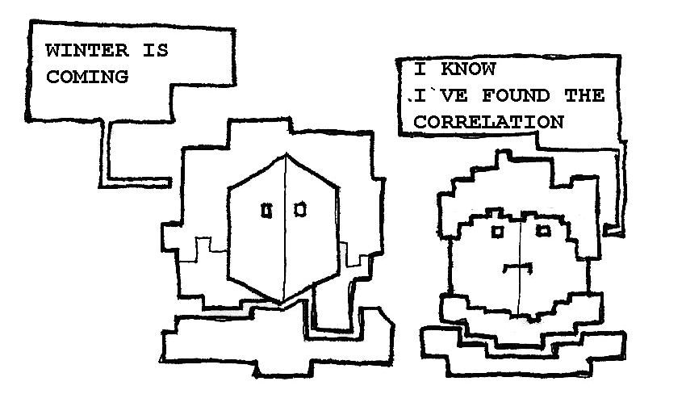
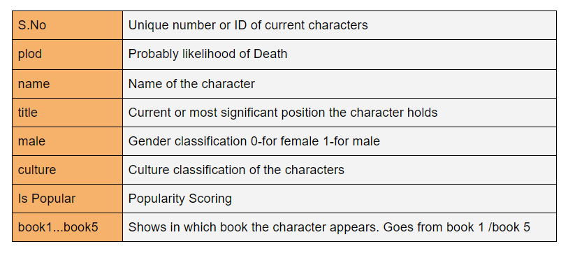
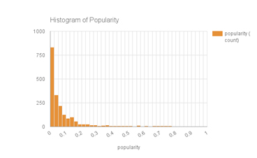
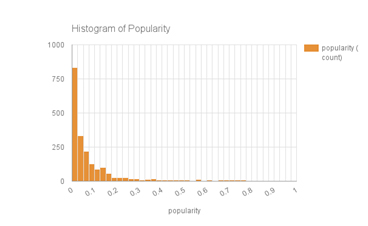
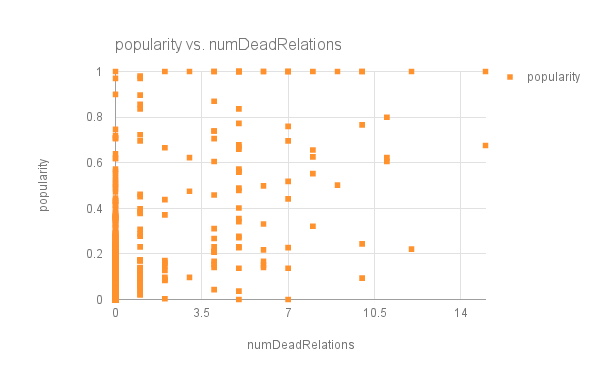
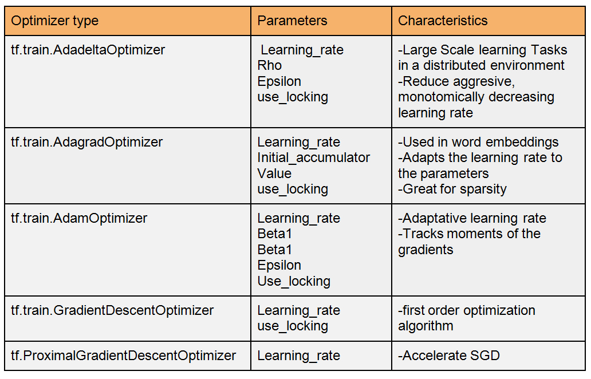

TensorFlow is a an open source library for numerical computation, specializing in machine learning applications. In this codelab, you will learn how to install and run TensorFlow on a single machine, and will predict deaths on Game of Thrones data using the tutorial Wide+Deep Learning Network.
TensorFlow is a an open source library for numerical computation, specializing in machine learning applications. In this codelab, you will learn how to install and run TensorFlow on a single machine, and will predict deaths on Game of Thrones data using the tutorial Wide+Deep Learning Network.
What are we going to be building?
This codelab presents wide+deep learning model execution taking into account Game of Thrones data for Death classification & prediction . The aim of this Codelab is to dig into wide+deep neural network model to combine the benefits of memorization+generalization models, in which wide model is directly relevant to features and deep model improves the diversity of recommended systems.
The wide+deep learning tutorial comes within census data so we have been working with an analogous dataset taking into consideration Game of Thrones .
What You'll Learn
In the next sections you will know how the dataset works ,how to implement the wide+deep learning model and finally some conclusions about the experimentation with the model, and more in detail . Besides and listed, you will learn how to:
- Familiarize yourself with Tensorflow
- How to select features for the wide part: choose the sparse base columns and crossed columns you want to use.
- Select features for the deep part: choose the continuous columns, the embedding dimension for each categorical column, and the hidden layer sizes.
- How to design the Wide+Deep Learning TensorFlow model
- Put them all together in a Wide & Deep model (DNNLinearCombinedClassifier).
What You'll Need
- A computer connected to the internet with Python2.7 installed
- The libraries sklearn, pandas , numpy installed
- A basic understanding of python and neural nets
- A fast computer running OS X or Linux
- A fair amount of time
The Goal
- To made a classification model
- Predict the next character death probability in Game of Thrones

The data powering the CodeLab
The GoT dataset was compiled from a kaggle dataset and transformed to offer more information using Game of Thrones wiki . Before going into a deeper data analysis, we would like to offer a view about the power of search with Answer the public tool. Using this visualization about the main five W some questions could be underlined about game of Thrones using the searches in US and UK
These visualization flashlights the public interest about Game of Thrones deaths related to WHY,WHAT,WHEN and HOW. In most of the searches there comes an interest about why all characters die, in which book each character die or in which TV season as well as searches about video compilations . Also we might find comparisons to Walking Death.
In a first general approach, we can see that searches about Game of Thrones Deaths are related to which deaths are packaged in each book or season. The question ‘HOW’ might offer us a more practical approach about people searching for compilation of deaths, Youtube videos about it.

Data analysis
During this 0 point we will serve as company for Tensorflow Codelab based on Game of Thrones Data, in order to provide a Neural Network model to classify the probability of Death of Game of Thrones characters with wide+deep model . There is some data theory we will dive in when implementing the model, but first we will dig a little bit in the data in order to know more about the behaviour of our dataset
You can download the data from the button below. The original dataset has been released in Kaggle and we have been filling the information in Game of Thrones wiki focusing on title, culture .
 In one first approach of the dataset we extract the following useful information about the dataset, wich we consider a significant first approach for finding correlations and relationships in between variables
NUMBER OF CHARACTERS : 1946
MEDIAN OF AGE : 27
CORRELATION BETWEEN Number of Death Relationships and Popularity : 0.663
Here we have some graphics that show correlation among data , having into account that most of them show relationships in between popularity and other characteristics .
 Game of Thrones character ecosystem shows a diverse culture approach that prints a diverse atmosphere , without a doubt it really brings to the table a rich atmosphere to enjoy. Among all cultures, the most significant are Valyrian - as House Targaryen members- , Northmen -like watchmen -that has the highest value in culture with 143 characters, and Andals - like House Lannister.
On this first approach of Histogram of popularity , more than 750 characters , about 40 % are ranged with 0 popularity ; being the most popular character listed – less than 20 , about a 1.02 % - the following, described together within .
However, the median of popularity is 0.03344
Game of Thrones character ecosystem shows a diverse culture approach that prints a diverse atmosphere , without a doubt it really brings to the table a rich atmosphere to enjoy. Among all cultures, the most significant are Valyrian - as House Targaryen members- , Northmen -like watchmen -that has the highest value in culture with 143 characters, and Andals - like House Lannister.
On this first approach of Histogram of popularity , more than 750 characters , about 40 % are ranged with 0 popularity ; being the most popular character listed – less than 20 , about a 1.02 % - the following, described together within .
However, the median of popularity is 0.03344
 With this graph we would like to enlighten us to solve the following questions
Is there a relationship in between the popularity of a character and the number of death Characters?
As you can see the popularity listed as 1 there is a constant interval that goes from 1 to 10 deaths. Also there is presence in more than 15 deaths
On the Y axis we can find a score that goes from 0 to 1 and gives us an idea of the popularity of the current character and scored on the X axis the number of death relationships that go from 0 to 14. The visualization of this graph drops some conclusions upon us :
0) Most popularity characters are ranked from 0 to 0.6 and have 0 dead relationships .
1) We could draw an exponential classify curve that give us a certain pattern and given the following conclusions .
--Most of unpopular characters have no dead relationships
--There is a linear incremental number of dead relationships once the character is very popular
--A very popular character with a high number of dead relations can be considered an outlier .
"Once you are very popular, there 're seems to be a linear incremental pattern of Death Relationship
As we dig into the data, so do we within the question we actually want to solve...How is popularity related to Death in Game of Thrones?.

This first approach has been great ! Now let´s move into installing Tensorflow and have a deeper understanding with wide+deep learning model to gain more knowledge .
Instalation of Tensorflow
Follow installation instructions for the following platforms
Linux
linuxMac
MacWindows
WindowsFrom Source
From SourceHere we cover Linux installation but you can see different . So , since the v1 release, you can type
$ pip install tensorflow # Python 2.7; CPU support (no GPU support)
$ pip3 install tensorflow # Python 3.n; CPU support (no GPU support)
$ pip install tensorflow-gpu # Python 2.7; GPU support
$ pip3 install tensorflow-gpu # Python 3.n; GPU support
Great! Now you should have your instalation complete. You can test in your console typing in python
>>> import tensorflow
>>> hello = tf.constant('Hello, Tensorflow!')
>>> sess = tf.Session()
>>> sess.run(hello)
'Hello, Tensorflow!'
Downloading the CodeLab
You can download the code and the data below. We suggest you to download both and put them in the same folder . We will be explaining afterwards in each model which part of the codes matches with each part of wide + deep learning model . Once you have it downloaded into your computer, you can play with it .
CodeLab Structure
- Download the code and the data_set and put it on a folder.
It should contain the file wide+deep_Tensorflow_GOT and the file GOT_data.csv
- Open the file and change the path in your dataset :
data_set = ‘your_path_here’
- In console, execute the program :
~ $ python 'program' --training_mode learn_runner --model_dir /Base directory for output models --model_type 'wide_n_deep' --steps 200
- In console, execute Tensorflow :
~ $ tensorboard --logdir =/tmp/model/
Network Structure
During the next session we will explain the architecture of the Wid+Deep learning model having into consideration the published paper by Google. We also recommend the talk given by Heng-Tze Cheng at Tensorflow Dev Summit 2017 .
Image from wide+deep tutorial
The aim of this model is to combine the benefits of memorization+generalization models, in wich wide model is directly relevant to features and deep model improves the diversity of recommended systems. The abstraction of concepts in this text comes from the paper wide + deep learning for recommender systems paper
With less feature engineering, deep neural networks can generalize better to unseen feature combinations through low-dimensional dense embeddings learned for the sparse features. However, deep neural networks with embeddings can over-generalize and recommend less relevant items when the user-item interactions are sparse and high-rank.
Wide+Deep learning combines the benefits the Memorization and generalization , which is a current challenge for learning systems. Each part of the nets shows it challenges as well, so in Wide net we can find crossed columns and in deep learning we can find embeddings as the most significant concepts operating in each part of the Network .

Base Features
Categorical variables are also known as discrete or qualitative variables. Categorical variables can be further categorized as either nominal, ordinal or dichotomous. Nominal variables are variables that have two or more categories, but which do not have an intrinsic order. Continuos variables are those that refers to continuous values such as numbers
CATEGORICAL_COLUMN_NAMES = only_existing([
'male',
'culture',
'mother',
'father',
'title',
'heir',
'house',
'spouse',
'numDeadRelations',
'boolDeadRelations',
], COLUMNS)
CONTINUOUS_COLUMNS = only_existing([
'age',
'popularity',
'dateOfBirth',
], COLUMNS)
Linear classiffier: Memorization
Memorization -Wide Model- Comes with learning the frequent co-ocurrence of features and exploiting the correlation available in the historical data. It is directly relevant to features . It can be achieved effectively using cross-product transformations over sparse features. Memorization is directly relevant to features.
The linear classifier digs into continuous features . In a practical approach you could say that this model is suitable for continuous -often numerical data- which already can be made some sense of. This model needs manual feature engineering for crossed relationships between columns.
Beyond you can find how we approach the linear classifier in the exercise : We define the linear variables in the columns We execute the linear classifier Here the design of the net comes with the combination of features that can combine the information in order to offer a suitable conclusion
Image from wide+deep tutorial
if FLAGS.model_type == "wide":
m = tf.contrib.learn.LinearClassifier(model_dir=model_dir,
feature_columns=wide_columns)
Deep layer
Image from wide+deep tutorial
Generalization - Deep Model- the model is a Feedfoward neural network that works with categorical features . there exist Transitivity of correlation and explores feature combinations that have never or rarely occurred in the past. It improves the diversity of recommended items . This generalization can be added by using features that are less granular . So at the end this model is great for combining two different models of classification using neural Networks. You can see how this model has been working with
Deep layer
elif FLAGS.model_type == "deep":
m = tf.contrib.learn.DNNClassifier(model_dir=model_dir,
feature_columns=deep_columns,
hidden_units=[100, 50])
Combining wide and deep learning model into one
The wide models and deep models are combined by summing up their final output log odds as the prediction, then feeding the prediction to a logistic loss function. All the graph definition and variable allocations have already been handled for you under the hood, so you simply need to create a DNNLinearCombinedClassifier:
In this case, there are two layers with 100 and 50 neurons each. You can select your own number of layers and neurons
else:
m = tf.contrib.learn.DNNLinearCombinedClassifier(
model_dir=model_dir,
linear_feature_columns=wide_columns,
dnn_feature_columns=deep_columns,
dnn_hidden_units=[100, 50],
fix_global_step_increment_bug = True,
)
return m
Optimizers

The Optimizer base class provides methods to compute gradients for a loss and apply gradients to variables. A collection of subclasses implement classic optimization algorithms such as GradientDescent and Adagrad.
Optimizers are a detailed part of neural net design that can offer a real performance difference among the neural net models. You can find documentation about Tensorflow optimizers hereIf we had to underline a concept about optimizers it would be the learning_rate .We could define the learning_rate as a value used by the learning algorithm to determine how quickly the weights are adjusted. It determines the adquisition time for neurons with weights that are trained using the algortihm.
Bellow we describe the parameters and the main characteristics of the optimizers wich you can try in the model. Note that the model has been defined as bellow and optimizers have been changed for that model :
Comparison
The code has been executed taking into account serveral models for the same dataset ; You can find the table bellow in wich we print the accuracy and other significant data about each part of the model : Please, take into account that all the modifications are inside m= tf.contrib.learn.DNNLinearCombinedClassifier tensorflow class and the design has been modeled with the wide and the deep settings . Please, to know more about this function visit the awesome documentation.
Conclusions
Wide+deep learning is great for large scale datasets that take into account both categorical and continuous features that include a numerical and embeding form . Having a self critical mode, we might have used a more large dataset with more Game of Thrones characters although the nature of the dataset is great for continuous and categorical clasification.
The accuracy of the model changes by design taking into account the hidden units of the model, the activation function, and the optimizers. Having more or less layers and hidden units does not imply that the functioning of the model might be better or worse .
Choosing the wide and deep learning settings carefully taking into account the problems they usually solve is also a useful task to take , as well as the learning rate.
The best result of the model is pasted with the accuracy as follows :
You can help us with the results of changing the model, generalizing in hypothesis :
In the model, if you increase the hidden layers and combine the number of neurons , the accuracy of the model increases or decreases? .
Please, fill your model conclussions in this FormTake this feedback form to tell us more about how useful it was and dig into it if you want to know more

Code :
Santiago SaavedraCodelab documentation and images :
Gema ParreñoSpecial thanks to :
FranSpecial thanks to :
Flipper83